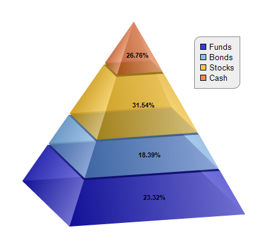

This example demonstrates a semi-transparent pyramid viewed at elevation and rotation angles. It also demonstrates adding a legend box to the pyramid chart.
The elevation and rotation angles are set using
PyramidChart.setViewAngle. The legend box is added using
BaseChart.addLegend. Semi-transparent colors are used to make the pyramid semi-transparent.
The following is the command line version of the code in "cppdemo/rotatedpyramid". The MFC version of the code is in "mfcdemo/mfcdemo". The Qt Widgets version of the code is in "qtdemo/qtdemo". The QML/Qt Quick version of the code is in "qmldemo/qmldemo".
#include "chartdir.h"
int main(int argc, char *argv[])
{
// The data for the pyramid chart
double data[] = {156, 123, 211, 179};
const int data_size = (int)(sizeof(data)/sizeof(*data));
// The labels for the pyramid chart
const char* labels[] = {"Funds", "Bonds", "Stocks", "Cash"};
const int labels_size = (int)(sizeof(labels)/sizeof(*labels));
// The semi-transparent colors for the pyramid layers
int colors[] = {0x400000cc, 0x4066aaee, 0x40ffbb00, 0x40ee6622};
const int colors_size = (int)(sizeof(colors)/sizeof(*colors));
// Create a PyramidChart object of size 450 x 400 pixels
PyramidChart* c = new PyramidChart(450, 400);
// Set the pyramid center at (220, 180), and width x height to 150 x 300 pixels
c->setPyramidSize(220, 180, 150, 300);
// Set the elevation to 15 degrees and rotation to 75 degrees
c->setViewAngle(15, 75);
// Set the pyramid data and labels
c->setData(DoubleArray(data, data_size), StringArray(labels, labels_size));
// Set the layer colors to the given colors
c->setColors(Chart::DataColor, IntArray(colors, colors_size));
// Leave 1% gaps between layers
c->setLayerGap(0.01);
// Add a legend box at (320, 60), with light grey (eeeeee) background and grey (888888) border.
// Set the top-left and bottom-right corners to rounded corners of 10 pixels radius.
LegendBox* legendBox = c->addLegend(320, 60);
legendBox->setBackground(0xeeeeee, 0x888888);
legendBox->setRoundedCorners(10, 0, 10, 0);
// Add labels at the center of the pyramid layers using Arial Bold font. The labels will show
// the percentage of the layers.
c->setCenterLabel("{percent}%", "Arial Bold");
// Output the chart
c->makeChart("rotatedpyramid.png");
//free up resources
delete c;
return 0;
}
© 2023 Advanced Software Engineering Limited. All rights reserved.